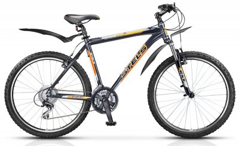
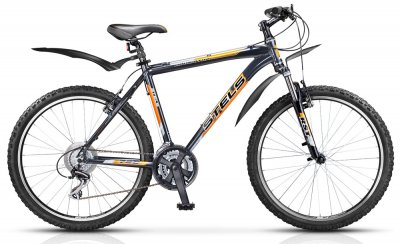

ДОРОЖНЫЙ ВЕЛОСИПЕД - Самый распространенный тип велосипеда еще десять лет назад. На таком велосипеде можно ездить как по лесной грунтовке, так и по асфальту, а также отправиться в несложный поход по равнинной местности, когда большая часть маршрута проходит по асфальтовым и грунтовым дорогам . Обычно такие велосипеды имеют закрытую раму, сваренную из труб. Верхняя труба расположена горизонтально или немного наклонена назад. Дорожный руль имеет поднятые вверх рукоятки, это обеспечивает высокую посадку, удобную и безопасную для езды по дорогам. Размер колес — обычно 28", но могут быть и меньшие диаметры. Применяются покрышки средней толщины с протектором, обеспечивающим хорошее сцепление с грунтом.
КОМФОРТНЫЙ ВЕЛОСИПЕД - Главным критерием для велосипедов этого типа служит компактность и простота обслуживания, а также безопасность при движении по городским улицам. Городской велосипед (ситибайк) может иметь колеса меньшего диаметра и открытую раму. Многие модели велосипедов можно складывать, что также удобно в условиях города. Но для сохранения прочности рамы приходится увеличивать диаметр нижней трубы, что увеличивает массу велосипеда. Если на велосипеде установлено несколько ведущих звездочек, то щиток цепи заменяют защитным пластиковым кольцом, которое препятствует попаданию штанины в звездочки цепной передачи и предохраняет одежду от загрязнения.
ШОССЕЙНЫЙ ВЕЛОСИПЕД - Такой велосипед предназначен для езды только по дорогам с хорошим асфальтовым покрытием. Обычно такие велосипеды имеют закрытую легкую раму. Верхняя труба расположена горизонтально или немного наклонена назад. Руль шоссейного велосипеда имеет сложную изогнутую форму, обеспечивая как высокую посадку, удобную и безопасную для езды по дорогам, так и низкую, с которой можно развить высокую скорость. Покрышки применяются гладкие и тонкие, что уменьшает сопротивление качению. Количество спиц часто уменьшают, потому что для такого велосипеда прочность колес не так важна, как для дорожного. На шоссейных велосипедах устанавливают бестормозные многоскоростные задние втулки с трещоточными механизмами свободного хода. Спереди обычно размещаются две звездочки. На оба колеса устанавливаются тормоза клещевого типа.